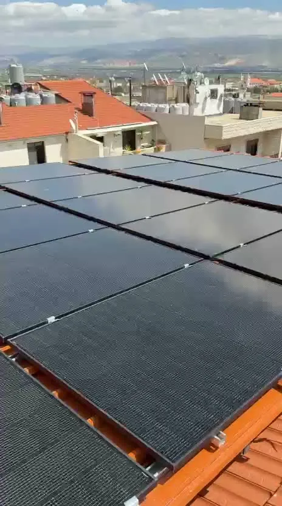
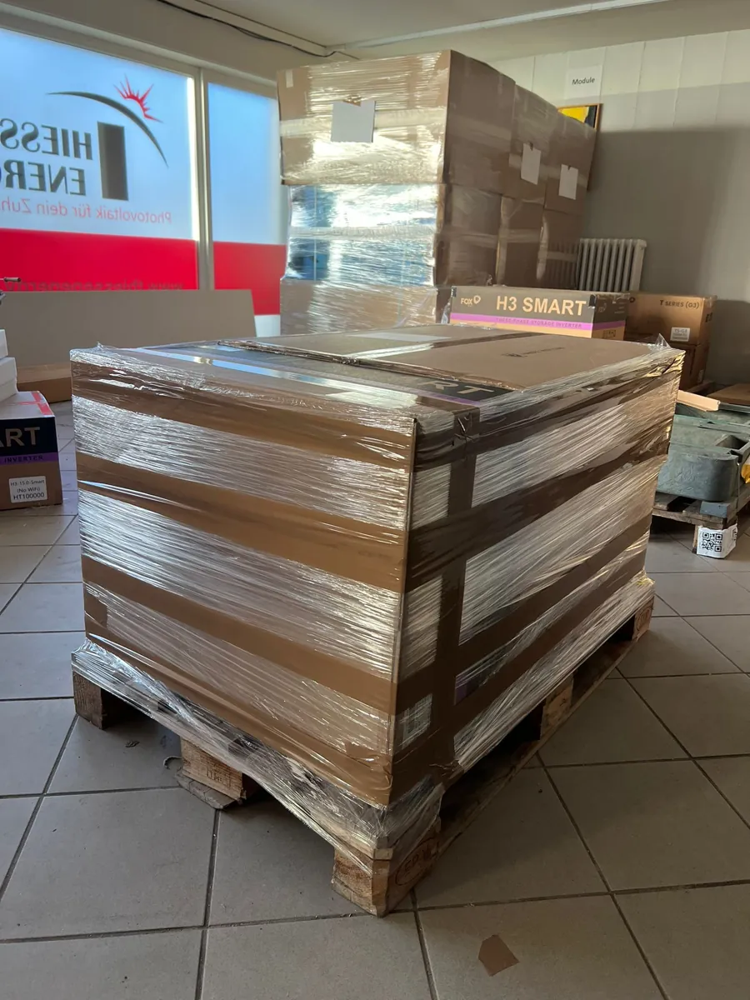
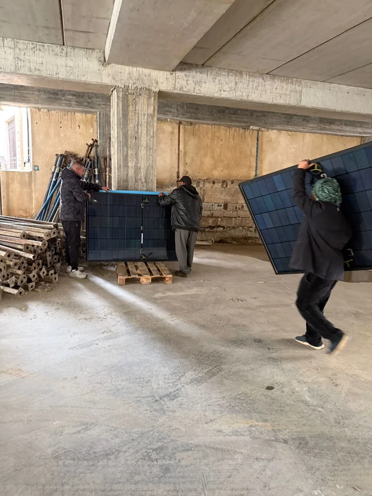
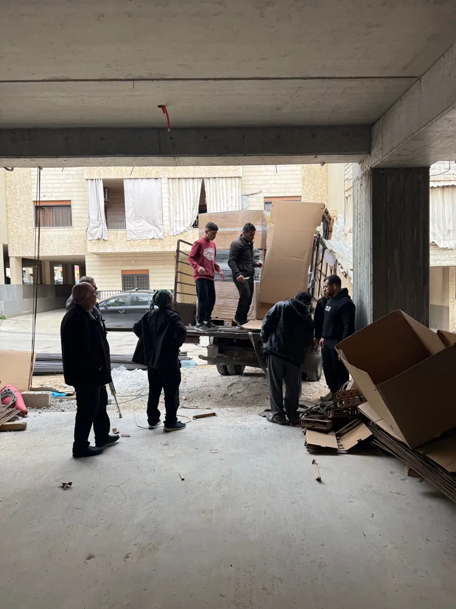
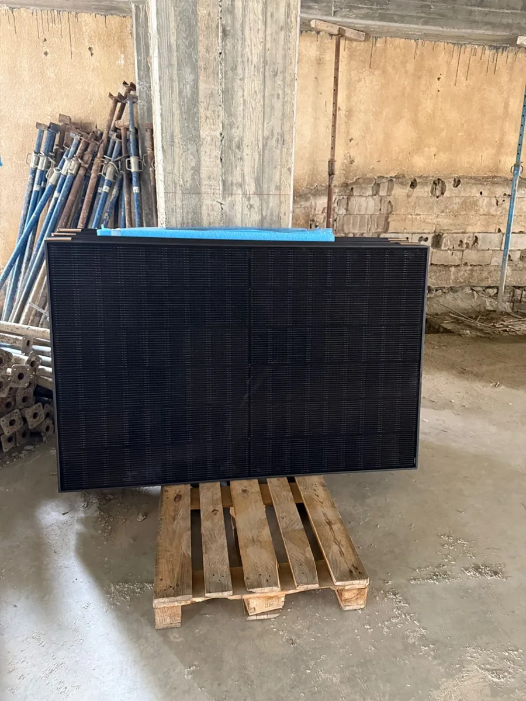

Strom, wo er am dringendsten fehlt.
Solar hilft! bringt Solaranlagen zu Gemeinden, Schulen und Hilfseinrichtungen in Krisengebieten – geplant von Fachleuten, beschafft zum Einkaufspreis, installiert von Handwerkern vor Ort.

Eine Stunde Strom am Tag
Zum Jahreswechsel 2022/2023 war André Thiessen im Libanon und erlebte die Stromkrise des Landes aus nächster Nähe: Der staatliche Versorger lieferte gerade einmal eine Stunde Strom pro Tag. Wer konnte, kaufte teuren Dieselstrom oder ließ sich auf zweifelhafte Solarangebote ein, die neue Abhängigkeiten schufen.
Als Solarunternehmer wusste er: Das geht besser. Aus dieser Erfahrung entstand Solar hilft! – eine Initiative, die das eigene Fachwissen dort einsetzt, wo Strom über Schule, Essensausgabe und medizinische Versorgung entscheidet.
Direkt
Anlagen für Gemeinden, Schulen und Flüchtlingseinrichtungen – dort, wo der Bedarf am größten ist.
Ohne Aufschlag
Komponenten zum Einkaufspreis. Kein Gewinn, kein Verwaltungsapparat.
Nachhaltig
Solarstrom ersetzt teure Dieselgeneratoren und macht unabhängig vom unzuverlässigen Netz.
Nachvollziehbar
Wir zeigen, was aus jeder Spende geworden ist – mit Fotos und Berichten von vor Ort.
Solarstrom für die True Vine Church
Die True Vine Church in Zahlé kümmert sich um Geflüchtete aus Syrien: Schulunterricht, Essenspakete, Jobvermittlung und medizinische Hilfe. Ohne verlässlichen Strom stand all das immer wieder still. Seit April 2026 liefert eine eigene Solaranlage mit Speicher den Strom dafür.
Spendenaufruf startet, Anlage wird geplant
Besuch vor Ort in Zahlé, Abstimmung mit der Gemeinde
30 Module, Wechselrichter und Speicher gehen auf die Reise
Die Ware kommt im Libanon an, Zollabwicklung
Montage durch lokale Fachkräfte – die Anlage geht in Betrieb
Die Anlage
- 30 Solarmodule à 420 Watt, beidseitig aktiv
- Wechselrichter von FOX ESS
- 2 Batteriespeicher mit zusammen rund 20 kWh – Strom auch nach Sonnenuntergang
- Montage durch Fachkräfte aus der Region




So wird aus einer Spende eine Anlage
Bedarf klären
Gemeinsam mit Partnern vor Ort: Wer braucht wie viel Strom, wofür und wann?
Planen
Anlagengröße, Speicher und Komponenten legt ein Solarfachbetrieb fest.
Beschaffen
Module, Wechselrichter und Speicher zum Einkaufspreis – ohne Aufschlag.
Verschicken
Logistik und Zoll übernimmt der jeweilige Projektpartner.
Installieren
Geprüfte Fachkräfte vor Ort montieren – das schafft auch Arbeit in der Region.
Berichten
Besuche vor Ort, Fotos und ein Bericht für alle Unterstützer.
Gemeinsam mit erfahrenen Händen
Solar hilft! arbeitet je Projekt mit Partnern zusammen, die das Land, die Menschen und die Abläufe kennen.
Himmelsperlen International e.V.
Gemeinnützige Hilfsorganisation aus Sulzbach (Taunus), seit Jahren im Libanon und in Syrien aktiv. Übernimmt Transport, Zoll und die Abstimmung mit den Gemeinden.
Thiessen Energy OHG
Solarfachbetrieb von André Thiessen. Plant die Anlagen und beschafft die Komponenten zum Einkaufspreis.
True Vine Church, Zahlé
Gemeinde mit Flüchtlingsarbeit in der Bekaa-Ebene. Begleitet Montage und Betrieb der Anlage.
Das nächste Projekt ist in Vorbereitung
Der Libanon hat gezeigt, dass es funktioniert. Jetzt soll daraus mehr werden – mit weiteren Gemeinden, die Strom dringend brauchen.
Spenden
Du möchtest das nächste Projekt mitfinanzieren? Schreib uns an info@solarhilft.de – wir melden uns mit allen Möglichkeiten.
Weitersagen
Erzähl deiner Gemeinde, deinem Hauskreis oder deinem Unternehmen von Solar hilft!. Gern kommen wir auch persönlich vorbei.
Fachwissen beitragen
Du bist Solarteur, Elektriker oder kennst Partner in Krisenregionen? Schreib uns: info@solarhilft.de
Solar hilft! ist eine private Initiative und kann derzeit selbst keine Zuwendungsbestätigungen ausstellen.